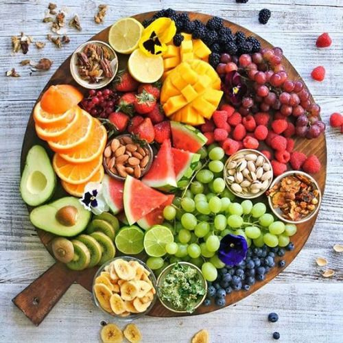
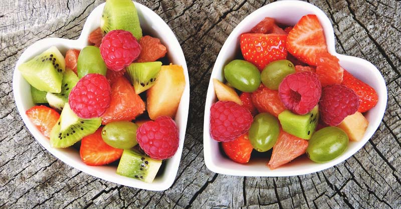
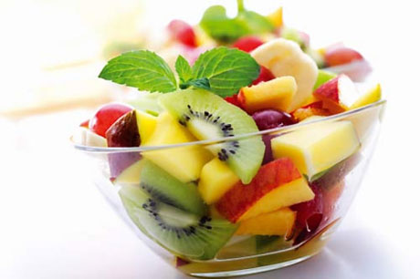

TONIC SPORT

HEALTHY EATING
All humans have to eat food for growth and maintenance of a healthy body, but we humans have different requirements as infants, children (kids), teenagers, young adults, adults, and seniors. For example, infants may require feeding every four hours until they gradually age and begin to take in more solid foods. Eventually they develop into the more normal pattern of eating three times per day as young kids. However, as most parents know, kids, teenagers, and young adults often snack between meals. Snacking is often not limited to these age groups because adults and seniors often do the same.


Advice On Healthy Eating
Here are some advice linked to Healthy Eating.
- Eat three meals a day (breakfast, lunch, and dinner); it is important to remember that dinner does not have to be the largest meal.
- Choose lean meats, poultry, fish, beans, eggs, and nuts (with emphasis on beans and nuts).
- Control portion sizes; eat the smallest portion that can satisfy hunger and then stop eating.
- Avoid sodas and sugar-enhanced drinks because of the excessive calories in the sodas and sugar drinks.
- Choose foods that are low in saturated fats, trans fats, cholesterol, salt (sodium), and added sugars
- Avoid eating raw or undercooked meats of any type.
